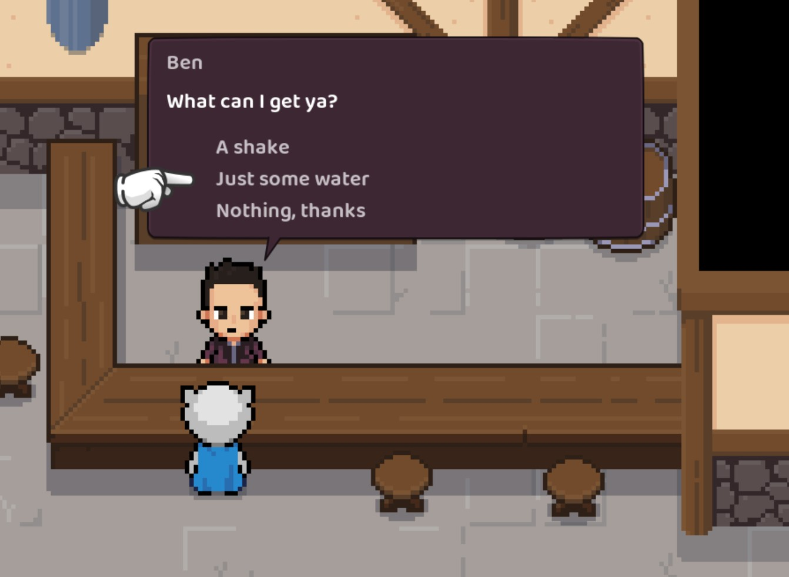

SayWhat: Branching dialogue for Godot
NOTE: SayWhat has been updated. Check out my more recent post.
If you're using Godot and you want some branching dialogue then you should check out my new SayWhat addon for Godot.

An example dialogue balloon using dialogue with response options
The plugin works in conjuction with my SayWhat branching dialogue editor.
Grab a copy of the addon and drop the files into res://addons/saywhat_godot and enable SayWhat in your project's plugins.
This gives you a global DialogueManager that will... um... manage your dialogue.
To initialise the dialogue manager you need two things: a dialogue resource and a game state object.
The dialogue resource is something you export from the SayWhat editor.
The game state object is a node that our dialogue manager can use to perform dialogue condition checks and run mutations against.
Before using the dialogue manager you need to tell it about those things:
DialogueManager.resource = preload("res://text/dialogue.tres")
DialogueManager.game_state = GameState
Getting some dialogue
The easiest way of getting a line of dialogue to display is by yielding to get_next_dialogue_line using an ID that you can copy from the SayWhat dialogue editor:
var dialogue = yield(DialogueManager.get_next_dialogue_line(id), "completed")
The returned object will be the first dialogue line that passes its condition checks, running any mutations that were found along the way.
Conditions
This game state object is the first thing checked for dialogue conditionals and mutations (before failing over to checking the current scene).
So, if you have a condition like [if some_variable == 42] on a line of dialogue then the dialogue manager will check GameState.some_variable
to see if the value is 42 to determine if the line should be shown.
Conditions can also be functions. All functions for checking and mutating are given an array of strings as arguments. For example, a line with the
condition [if has_these_items potion sword] would run has_these_items with args ["potion", "sword"]:
# game_state.gd
var inventory : Array
func has_these_items(args: Array) -> bool:
for item in args:
if not inventory.has(item):
return false
return true
Mutations
Mutations can be as simple as updating some game state.
They can also be used for running little sequences. For example, if you had [do give item] as a mutation in your dialogue then the dialogue manager would look for a function called give_item on the game_state (and if nothing is found it would check the current scene).
func give_item(args: Array) -> void:
$ben.AnimationPlayer.play("give_item")
yield($ben.AnimationPlayer, "animation_finished")
GameState.inventory.add(args[0])
Displaying dialogue
It's up to you to actually render the dialogue in whatever way makes sense for your game.
For example, I have a global Interface object that I can call show_dialogue on. This then
instances a dialogue balloon scene that creates the visual elements needed to show the dialogue
as well as handling user input for response options.
The script for initiating a conversation looks something like this:
func show_dialogue(key: String) -> void:
var dialogue = yield(DialogueManager.get_next_dialogue_line(key), "completed")
if dialogue != null:
var balloon := DialogueBalloon.instance()
balloon.dialogue = dialogue
add_child(balloon)
# Dialogue might have options so we have to wait and see
# what the player choose
show_dialogue(yield(balloon, "dialogue_actioned"))
If you end up using SayWhat in your game then I'd love to hear about it on Twitter.